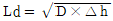
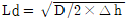
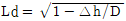
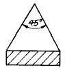
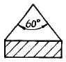
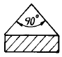
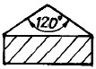
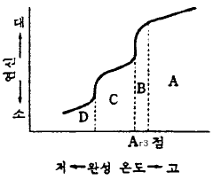

압연기능장 (2004-07-18 기출문제)
1과목: 임의 구분
1. 다음 기체연료 중 발열량(Kcal/Nm3)이 가장 높은 것은?
- 천연가스
- 고로가스
- 전로가스
- 코크스가스
(정답률: 83%)

2. 다음 연소반응에서 1Kg의 탄소[C]가 연소하는데 필요한 이론 공기량은 몇 Nm3인가? (단, C:12, 공기 중 산소량:21%, 2C + O2= 2CO)
- 0.93
- 1.87
- 4.44
- 8.88
(정답률: 55%)
3. 열간압연 공장의 작업지시서는 Roll단위 형성에 의하여 순차적으로 압연하도록 되어 있다.Roll단위 편성시 고려하여야 할 사항 중 적합하지 않은 것은?
- 전, 후공정(가열, 압연, 정정)의 부하 배분
- 제품의 기계적, 물리적 성질
- 제품의 폭
- 조정재
(정답률: 70%)
4. 냉연박판의 압연공정이 바르게 순서대로 나열된 것은?
- 냉간압연-산세-표면청정-풀림-조질압연-전단리코일
- 산세-냉간압연-표면청정-풀림-조질압연-전단리코일
- 표면청정-산세-냉간압연-조질압연-풀림-전단리코일
- 조질압연-냉간압연-산세-표면청정-풀림-전단리코일
(정답률: 84%)
5. 후판 압연기에서 압연 중 피압연재인 날판의 머리부분이 밑으로 굽어서 하부 Bending Roller Table Roller에 충격을 주고 있다. 이를 해결 하기 위한 대책 중 옳지 않은 것은?
- 소재(Slab)하부 온도를 상향 조정한다.
- 하부작업롤(Work Roll)에 직경이 상부보다 큰 롤을 사용한다.
- 패스라인(Pass Line)을 하향(낮게)조정한다.
- 하부작업롤(Work Roll)속도를 초기 순간가속 시킨다.
(정답률: 78%)
6. 분괴압연에서 압연전,후 재료의 두께 h1=200mm, h2=150mm, 폭 b1=250mm, b2=262mm, 길이 L1=2000mm, L2=2545mm이다. 이 때 Spread 계수는?
- 0.750
- 1.048
- 1.273
- 1.00
(정답률: 55%)
7. 압연작업시 롤직경을 D, 압하량을 △h라 할 때 접촉투영 길이 Ld는 어떻게 나타내는가?
- Ld= D × △h



(정답률: 58%)
8. 압연작업시 최초 높이 H0, 폭 B0, 길이 L0의 재료가 압연 후 높이 H1, 폭 B1, 길이 L1으로 변하였다. 이 때 H0/H1 × B0/B1 × L0/L1는 얼마가 되는가? (단, 압연재는 비 압축성 재료이다.)
- 0
- 1
- 2
- 5
(정답률: 78%)
9. 열연코일상에 발생한 스케일은 모재(Fe)에 산화철로서 3개층을 형성하고 있다.하층으로부터 상층으로 형성되는 산화철층의 순서가 맞는 것은?
- FeO→ Fe3O4→ FeO
- FeO→ Fe2O3→ FeO
- FeO→ Fe3O4→ Fe2O3
- FeO→ Fe2O3→ Fe3O4
(정답률: 87%)
10. 연소에 필요한 조건 중 틀린 것은?
- 연소에 충분한 산소를 공급할 것
- 착화 온도 이상으로 가열할 것
- 완전 연소에 충분한 시간을 줄 것
- 연료의 온도를 낮추어줄 것
(정답률: 89%)
11. 냉연강판의 특징이 아닌 것은?
- 표면이 미려하다.
- 제품의 치수가 균일하다.
- 두껍고 값이 싸다.
- 박강판의 제조가 가능하다.
(정답률: 87%)
12. 셀룰로이드 용액을 검사부에 용해시켜 강재의 결함을 검사하는 방법은?
- 파면검사법
- 썸프(sump)법
- 부식법
- 타진법
(정답률: 82%)
13. 다음 중 냉간압연 제품은?
- Foil
- Slab
- Billet
- Bloom
(정답률: 81%)
14. 윤활유의 열화(劣化)정도를 파악하는 것은?
- 점도(粘度)
- 유화도(乳化度)
- 잔류탄소(殘留炭素)
- 전산가(全酸價)
(정답률: 80%)
15. 가열로에서 페가스를 이용하여 연소공기를 예열하는 설비는?
- Collertor
- 페가스Boiler
- Recuperator
- Generator
(정답률: 82%)
16. 압연에서 가열로작업의 열전달방법이 아닌 것은?
- 전도
- 방열
- 대류
- 복사
(정답률: 83%)
17. 중후판 압연에서 산화물(스케일)의 제거장치로 가장 적합한 것은?
- 고압수 스프레이
- 공기 취입
- 소재 가열
- 표면 도장
(정답률: 92%)
18. 열연(hot strip mill)에서 압연중에 생기는 처짐을 제어하는 장치는?
- 루우퍼(looper)
- 사이드 가이드(side guide)
- 권취기
- 스트립퍼어 가이드(stripper guide)
(정답률: 62%)
19. 작은 지름 롤의 이용과 롤 축에 의한 크라운 교정이 유효한 냉간압연기로 데라 압연기라고도 하는 롤의 배치는?
- 2 단식
- 5 단식
- 6 단식
- 다단식
(정답률: 65%)
20. 압연용 가열로의 목적이 아닌 것은?
- 재료의 균일 가열
- 충분한 가열
- 최대한의 열경제성
- 산화성 가열
(정답률: 84%)
2과목: 임의 구분
21. 냉간 압연기의 판후(板厚)제어장치는?
- load cell
- X-ray
- A.G.C
- L.V.D.T
(정답률: 82%)
22. 균열로의 공통적인 조건이 아닌 것은?
- 강괴를 국부 가열하여야 한다.
- 연소실을 여유있게 한다.
- 노내 분위기 제어가 쉬어야 한다.
- 조로 계획을 세워야 한다.
(정답률: 79%)
23. 가열로의 열정산시 출열의 항목에 해당되는 것은?
- 스케일의 현열
- 연료의 현열
- 공기의 현열
- 연료 연소열
(정답률: 76%)
24. 질화처리한 강의 표면경도가 높은 이유는?
- 질화처리후 담금질에 의해 조직이 변하기 때문에
- 질소를 흡수하여 질화물을 형성하기 때문에
- 질화층이 깊고, 인성이 있기 때문에
- 내부경도가 증가하기 때문에
(정답률: 66%)
25. 순철은 1539° 에서 응고하여 실온까지 냉각하는 변태 중 γ-Fe가 α -Fe로 되는 변태는?
- A1
- A2
- A3
- Ao
(정답률: 59%)
26. 항복점이 뚜렷이 나타나지 않는 재료로서 항복점 대신에 0.2%의 영구 스트레인이 발생할 때의 응력은?
- 항복강도
- 인장강도
- 내력
- 비례한도
(정답률: 64%)
27. 그림과 같이 와이어 로우프로 무거운 물건을 매달 때 로우프에 가장 힘이 적게 드는 각도는?




(정답률: 81%)
28. 완성 압연온도의 연신율에 대한 그림이다. D의 조직은?

- 정립조직
- 표층만의 조대립
- 혼립조직
- 냉간가공 조직
(정답률: 75%)
29. 냉간압연에 사용되는 윤활유의 조건 중 틀린 것은?
- 유막강도가 클 것
- 압연재의 탈지성이 양호할 것
- 유성이 작고 에멀션화성이 없을 것
- 소재의 표면에 균일하게 부착할 것
(정답률: 86%)
30. 압연 온도 조정으로 최종패스(pass) 온도를 낮게 하여 재료의 성질을 개선하는 압연 방법은?
- 조압연
- 분괴압연
- 조정압연
- 크로스압연
(정답률: 69%)
31. 냉간압연에 영향을 주는 요인과 관련이 가장 적은 것은?
- 압연속도와 압연재료
- 마찰계수와 윤활유
- 재료의 조성과 공구
- 롤의 규격 및 전, 후방 장력
(정답률: 90%)
32. 냉간압연기에 계산기 제어를 채용하였을 때의 효과 중 틀린 것은?
- 제품의 균일성이 향상된다.
- 생산성이 향상된다.
- 조작미스는 감소하나 압연재의 파단은 증가한다.
- 실효율이 향상된다.
(정답률: 93%)
33. 후판의 압연순서를 바르게 나타낸 것은?
- 스케일제거-강편가열-압연-냉각-교정-절단
- 강편가열-스케일제거-압연-교정-냉각-절단
- 스케일제거-강편가열-교정-압연-절단-냉각
- 강편가열-스케일제거-교정-압연-절단-냉각
(정답률: 83%)
34. 압연재의 정정에 이용되는 열간 스카핑 머신의 특징이 아닌 것은?
- 균일하고 평탄한 손질면을 얻는다.
- 손질 깊이 조정이 용이하다.
- 냉간스카프에 비해 산소 소비량이 많다.
- 작업속도가 빠르다.
(정답률: 84%)
35. 압연에서 소재를 물어들이는 최대의 접촉각은?
- 미끌림각
- 후진각
- 물림각
- 전단각
(정답률: 82%)
36. 압연유의 급유방식 중 순환방식의 가장 올바른 설명은?
- 직접방식에 비하여 냉각효과가 훨씬 좋다.
- 폐유처리 설비가 적은 용량의 것으로 가능하다.
- 윤활성능이 우수한 압연유의 사용이 쉽다.
- 박판 고속 압연에는 활용할 수 없다.
(정답률: 67%)
37. 열간압연 박판의 절단작업에서 Strip의 양쪽면을 절단하는 설비는?
- 엔코일러(Un Coiler)
- 레벨러(Leveller)
- 사이드리이머(Side Reamer)
- Flying Shear
(정답률: 80%)
38. 수직롤과 수평롤로 구성되어지는 압연기의 형식은?
- 플라네터리 압연기
- 스테켈식 압연기
- 센지미어식 압연기
- 유니버어설 압연기
(정답률: 68%)
39. 분괴의 정정회수율을 바르게 나타낸 것은?
- 강괴/압연강편
- 압연강편/소재강편
- 합격강편/압연강편
- 압연강편/강괴
(정답률: 56%)
40. 압연재가 롤에 쉽게 치입이 되기 위한 조건으로서 옳은 것은?
- 압하량이 커야 한다.
- 롤 직경이 작아야 한다.
- 마찰계수가 작아야 한다.
- 치입각이 작아야 한다.
(정답률: 61%)
3과목: 임의 구분
41. 관재 압연기에서 관의 불균일한 두께를 수정하고 관 내외면의 요철면과 흠집을 눌러서 펴지게 하는 장치는?
- 플라그 밀
- 리일러
- 성형기
- 레듀우서
(정답률: 53%)
42. CAD/CAM은 컴퓨터를 이용한 설계제도 및 제작을 의미하며 주 기능은 제도 및 설계작업 그리고 제품의 생산가공에 있는데 CAD 기능에 속하지 않는 것은?
- 가공용해
- 기획구상
- 상세설계
- 기본설계
(정답률: 88%)
43. 자동생산 라인의 입력부에 접속되는 외부기기가 아닌 것은?
- 엔코더
- 푸시버턴
- LED
- 근접스위치
(정답률: 80%)
44. 가열온도가 낮거나 충분히 균열되어 있지 않을 때 나타나는 현상 중 틀린 것은?
- 압연 중 온도의 저하
- 롤의 마모 및 절손
- 스케일 생성량의 급격한 증대
- 형상의 불량
(정답률: 85%)
45. 다음 롤 중 내마멸성이 가장 좋은 것은?
- 칠드로울
- 주강로울
- 단강로울
- 샌드강로울
(정답률: 76%)
46. 다음 중 출력 장치가 아닌 것은?
- 디지타이저
- 프린터
- 플로터
- 모니터
(정답률: 82%)
47. 1개 또는 상호 다른 여러개의 열쇠를 사용할 때 전체의 열쇠가 열리지 않으면 기계가 조작되지 않는 록기구는?
- 인터록(INTERLOCK)
- 키이록(KEYLOCK)
- 키타입 인터록(KEY-TYPE INTERLOCK)
- 타이밍록(TIMING LOCK)
(정답률: 64%)
48. 기계 구조용강의 KS 규격의 재료 기호로 맞는 것은?
- STC3
- SM45C
- GC 400
- SACM415
(정답률: 80%)
49. 순철의 자기변태점은?
- A4 변태점
- A3 변태점
- A2 변태점
- A1 변태점
(정답률: 62%)
50. 주변의 화염, 전기불꽃 등의 발화원이 없는 물질을 공기 중에서 가열했을 때 발화 또는 폭발을 일으키는 최저온도를 무엇이라 하는가?
- 발화점
- 인화점
- 폭발점
- 연소점
(정답률: 73%)
51. 재해 예방의 4원칙이 아닌 것은?
- 예방가능의 원칙
- 사고지연의 원칙
- 원인연계의 원칙
- 대책선정의 원칙
(정답률: 88%)
52. 스테인리스강의 분류를 구성조직으로 분류한 것 중 잘못된 것은?
- 시그마형
- 오스테나이트형
- 페라이트형
- 마텐자이트형
(정답률: 85%)
53. 열팽창계수가 가장 적은 니켈(Ni) 합금은?
- 백동
- 인바
- 모넬
- 퍼엄알로이
(정답률: 80%)
54. 철강의 합금원소로서 담금질성을 증대시키고 강도를 높이며 탈산제로 좋고 황과 결합하여 피삭성을 높이고 적열취성을 방지하는 원소로 가장 적합한 것은?
- 망간(Mn)
- 인(P)
- 규소(Si)
- 니켈(Ni)
(정답률: 78%)
55. 미리 정해진 일정 단위중에 포함된 부적합(결점)수에 의거 공정을 관리할 때 사용하는 관리도는?
- p관리도
- nP관리도
- c관리도
- u관리도
(정답률: 69%)
56. 도수분포표에서 도수가 최대인 곳의 대표치를 말하는 것은?
- 중위수
- 비 대칭도
- 모우드(mode)
- 첨도
(정답률: 65%)
57. 로트수가 10 이고 준비작업시간이 20분이며 로트별 정미작업시간이 60분이라면 1로트당 작업시간은?
- 90분
- 62분
- 26분
- 13분
(정답률: 58%)
58. 더미활동(dummy activity)에 대한 설명중 가장 적합한 것은?
- 가장 긴 작업시간이 예상되는 공정을 말한다.
- 공정의 시작에서 그 단계에 이르는 공정별 소요시간들중 가장 큰 값이다.
- 실제활동은 아니며, 활동의 선행조건을 네트워크에 명확히 표현하기 위한 활동이다.
- 각 활동별 소요시간이 베타분포를 따른다고 가정할 때의 활동이다.
(정답률: 74%)
59. 단순지수평활법을 이용하여 금월의 수요를 예측하려고 한다면 이때 필요한 자료는 무엇인가?
- 일정기간의 평균값, 가중값, 지수평활계수
- 추세선, 최소자승법, 매개변수
- 전월의 예측치와 실제치, 지수평활계수
- 추세변동, 순환변동, 우연변동
(정답률: 74%)
60. 다음 중 검사항목에 의한 분류가 아닌 것은?
- 자주검사
- 수량검사
- 중량검사
- 성능검사
(정답률: 80%)